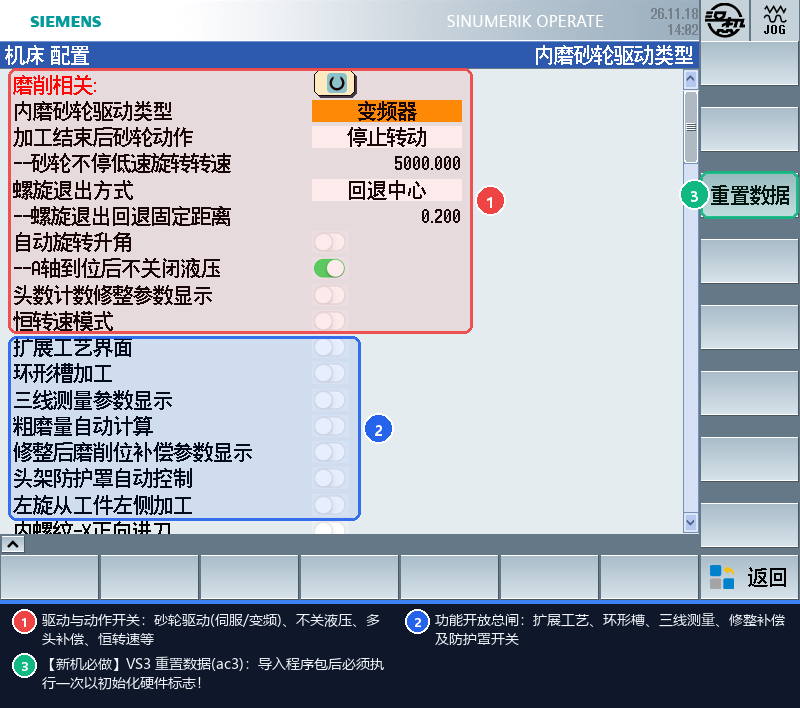
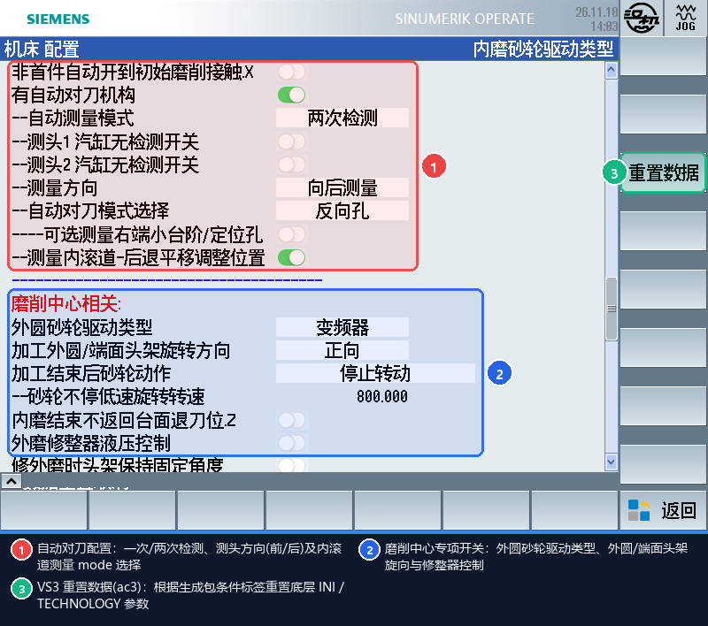
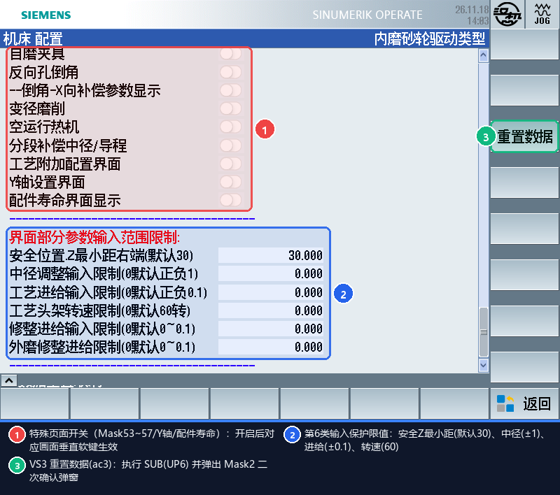
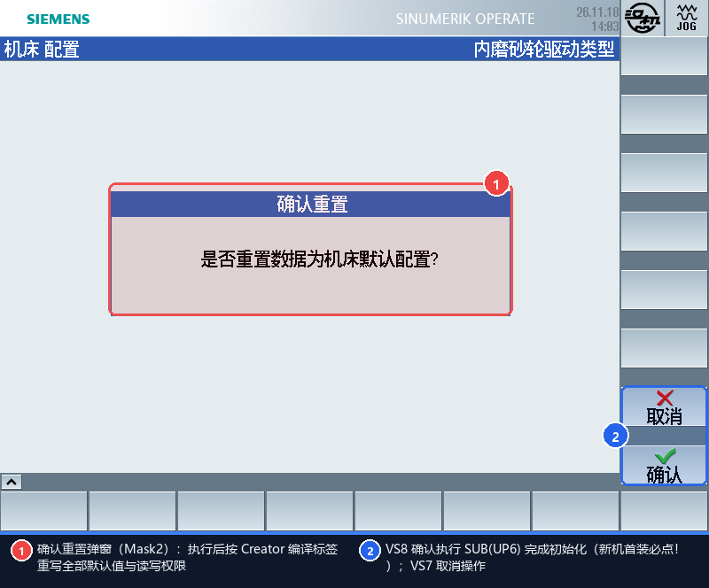

5.2 机床系统配置与安全解锁
机床配置（a_setting.com）集中管理所有影响机床安全逻辑、电主轴类型、自动门/防护罩联锁、修整对刀策略以及扩展模块开关的系统级配置。为防止操作工误修改，本页前设了动态密码锁。
1. 动态解锁口令验证（Mask0）
从 CUSTOM 主页 点击 VS8（扩展菜单 [≡▸]）→ VS1（机床配置） 后，首先进入口令解锁页 Mask0（基于 Horizon-Juicer >= V3.29.0 架构；注意 VS8 → VS1 入口、Mask0 隐藏 VS3 以及 Mask1 VS3 重置数据 均要求系统处于 ac3（用户口令；或服务口令 ac2 / 制造商口令 ac1） 以上权限，而 Mask1 内大多数参数输入框需 ac4（钥匙开关 3 档） 权限方可修改）：

- 自动环境自检：进入界面时后台按
user > oem > siemens层级优先顺序查找私有配置文件machine_sec.ini并校验字段有效性。如右侧红色状态框提示配置丢失、配置缺损或配置无效，请先按 3.1 节 方法恢复配置包后再继续； - 获取 6 位挑战码：按下右侧垂直软键
VS3，右下角将显示当前生成的 6 位数字挑战码（持久化种子每次递增变化，防止重放）； - 计算并输入解锁：在调试电脑
HorizonJuicerCreator的 口令计算 工具中，或登录网页版口令计算器 https://hjpc.niekun.net/（需向管理员申请账户和密码，见 3.1 节）填入该 6 位挑战码算出 6 位动态密码，再回到机床界面填入口令验证（PASSWD_CHECK）输入框，验证通过即自动切入Mask1主参数配置页。
安全说明：核心密钥盐值与口令派生计算规则（以
******脱敏代指）在本地加密配置中运行，本手册不公开内部算法常量，请勿尝试手动修改machine_sec.ini内参数，否则会触发配置无效告警。
2. 六大类底层配置参数详表（Mask1）
进入 Mask1 后，屏幕按功能分区展示 6 大类配置项（右侧滚动条可上下浏览全表）。下表同时列出 NC 变量名（0-based，用于 .SPF 与 MGUD.DEF） 与 HMI 脚本引用名（1-based，NC+1），方便现场跨文件核对：



2.1 第一类：磨削配置
| HMI 参数名称 | NC 变量（0-based） | HMI 引用（1-based） | 可选值与含义说明 |
|---|---|---|---|
| 内磨/外磨砂轮驱动类型 | INI[36] |
INI[37] |
0 变频器/模拟量 / 1 伺服电机（F_GRINDWHEEL_RUN.SPF 按 INI[36] 判断发 M13/R299 还是 M1=3 S1=；代码生成阶段亦按选配确定控制分支） |
| 程序结束砂轮停止 | INI[79] |
INI[80] |
0 停止 / 1 不停（保持当前转速）/ 2 不停且按低速旋转 |
| 砂轮低速旋转转速 | TECHNOLOGY[9] |
TECHNOLOGY[10] |
当结束模式设为低速不停时的维持转速（RPM） |
| 内螺纹螺旋退出方式 | TECHNOLOGY[234] |
TECHNOLOGY[235] |
仅内螺纹：0 退回工件中心 / 1 后退固定安全距离 |
| 螺旋退出后退距离 | TECHNOLOGY[235] |
TECHNOLOGY[236] |
仅内螺纹：螺旋退出方式为 1 时使用的 X 退刀距离（mm） |
| 螺旋升角使能 | INI[16] |
INI[17] |
需配 A 轴：0 否 / 1 是，决定程序运行时是否转动 A 轴 |
| 转完 A 轴不关闭液压 | INI[158] |
INI[159] |
需配 A 轴：0 转完关闭液压 / 1 保持夹紧松开液压状态 |
| 按头数修整参数显示 | WORK[4] |
WORK[5] |
0 隐藏 / 1 在工艺界面开放“多头磨完计数 vs 每头计数”开关 |
| 砂轮恒转速模式 | INI[144] |
INI[145] |
0 否（按线速度自动换算 RPM）/ 1 是（开放直接输入恒定 RPM） |
| 扩展工艺开关 | PROCESS[15] |
PROCESS[16] |
0 精简工艺参数表 / 1 扩展工艺参数表（含分工序修整参数与批量/单件分化） |
| 环形槽功能开关 | RING[49] |
RING[50] |
0 隐藏 / 1 在磨削参数界面开启“螺纹 / 环形槽”切换开关 |
| 三线测量参数显示 | INI[148] |
INI[149] |
仅内螺纹：0 隐藏 / 1 在工艺界面底部显示三线/钢球/终尺寸 H |
| 粗磨量自动计算 | TECHNOLOGY[233] |
TECHNOLOGY[234] |
0 否 / 1 是（开启后由总余量与后三道工序自动反算粗磨进给深度） |
| 加工中修整补偿显示 | DRESSER[58] |
DRESSER[59] |
0 隐藏 / 1 在修整界面显示 加工中修整位置补偿量（用于修正系统性尺寸漂移） |
| 内螺纹头架防护罩控制 | PROCESS[120] |
PROCESS[121] |
仅内螺纹：0 无 / 1 自动伸出缩回控制（F_SHIELD_CONTROL） |
| 内螺纹左旋左侧加工 | TECHNOLOGY[65] |
TECHNOLOGY[66] |
仅内螺纹：0 否（默认从右向左）/ 1 是（左旋工件改从左向右） |
| 外螺纹左旋右侧加工 | TECHNOLOGY[168] |
TECHNOLOGY[169] |
仅外螺纹：0 否 / 1 是 |
| 内螺纹正向进刀磨削 | WORK[7] |
WORK[8] |
仅内螺纹：0 否（常规负向切入）/ 1 是（正向进刀磨削方向） |
| 结束关闭修整/对刀键 | INI[70] |
INI[71] |
0 否 / 1 程序结束时自动发 M78/M61 熄灭 MCP 修整及对刀按键灯 |
| 是否有自动门 | PROCESS[52] |
PROCESS[53] |
0 否 / 1 是 |
| 自动门选择 | TECHNOLOGY[59] |
TECHNOLOGY[60] |
1 自动门 1（$A_DBB[9/10]）/ 2 自动门 2（$A_DBB[22/23]） |
| 自动门开关检测 | TECHNOLOGY[64] |
TECHNOLOGY[65] |
0 不检测到位信号（延时放行）/ 1 强制等待开关检测信号 |
| 粗磨消空程使能 | TECHNOLOGY[293] |
TECHNOLOGY[294] |
0 否 / 1 是（利用 $A_IN[15] 声发射/碰撞接触信号快速消空程） |
| 起始加工工序选择使能 | SHAPE_MODEL[63] |
SHAPE_MODEL[64] |
0 否 / 1 是（在批量磨削界面允许指定从半精/精磨及第几循环接续加工） |
| 断电回退使能 | TECHNOLOGY[299] |
TECHNOLOGY[300] |
0 否 / 1 是（配合 $A_DBB[25] 与 F_POWEROFF_PROTECT.SPF 执行瞬时退刀） |
| 断电回退后退距离 | INI[19] |
INI[20] |
断电保护触发后的 X 轴回退距离（程序内强制安全限幅 0～5 mm） |
| 磨削冷却附加通道 | TECHNOLOGY[307] |
TECHNOLOGY[308] |
0 无 / 1 附加开启 M28 / 2 附加开启 M38 |
| 压力检测信号显示 | TECHNOLOGY[367] |
TECHNOLOGY[368] |
0 隐藏 / 1 在工艺界面显示气压/油压监控状态 |
| 双向进刀量输入模式 | TECHNOLOGY[369] |
TECHNOLOGY[370] |
0 输入值代表往返两次的总和 / 1 输入值代表单次单向进刀量 |
2.2 第二类：修整配置
| HMI 参数名称 | NC 变量（0-based） | HMI 引用（1-based） | 可选值与含义说明 |
|---|---|---|---|
| 修整轮类型选择 | INI[37] |
INI[38] |
0 模拟量 / 1 伺服 |
| 程序结束修整轮停止 | PROCESS[128] |
PROCESS[129] |
0 停止 / 1 不停（保持转速）/ 2 不停且低速旋转 |
| 修整轮低速旋转转速 | PROCESS[129] |
PROCESS[130] |
设为低速不停时的维持 RPM |
| 新砂轮插补修整模式 | INI[88] |
INI[89] |
0 抬齿高模式（逐层逼近齿顶）/ 1 偏半个砂轮宽度模式（先单边切入成形） |
| 通用齿型插补平面 | DRESSER[56] |
DRESSER[57] |
0 G17（1-2 几何轴）/ 1 G18（1-3 几何轴）/ 2 G19（2-3 几何轴） |
| 修整时 A 轴角度显示 | INI[154] |
INI[155] |
需配 A 轴：0 隐藏 / 1 在修整界面显示 修整角度（用于大导程干涉修整） |
| 修整轮反向旋转 | INI[155] |
INI[156] |
0 不反 / 1 反向旋转（切换滚轮 M 指令正反转方向） |
| 外部齿形参数显示 | DRESSER[110] |
DRESSER[111] |
0 否 / 1 在修整界面显示外部轮廓轨迹文件名与存储位置选框 |
| 外部轨迹无外围延长 | DRESSER[106] |
DRESSER[107] |
0 有外围斜线延长 / 1 无外围延长部分 |
| 每 20 次刷新砂轮转速 | INI[111] |
INI[112] |
0 跳过 / 1 长循环修整时每 20 次重新调用转速计算并延时 3 秒（防止直径缩小后线速度偏差） |
| 提前一刀启动滚轮 | DRESSER[57] |
DRESSER[58] |
0 否 / 1 是（减少磨削中修整的等待延时） |
| 新砂轮是否为成型砂轮 | TECHNOLOGY[58] |
TECHNOLOGY[59] |
仅内螺纹：0 隐藏 / 1 显示 普通/成型 切换框 |
| 三角/梯形/双圆弧扩展显示 | SHAPE_MODEL[6/26/110] |
SHAPE_MODEL[7/27/111] |
分别控制三角带凹槽选择、梯形扩展（偏梯形/戴帽梯形）、双圆弧扩展选项是否开放 |
| 开放附加齿型 | DRESSER[114] |
DRESSER[115] |
0 否 / 1 是 |
| 新砂轮轮廓单独修整 | TECHNOLOGY[302] |
TECHNOLOGY[303] |
0 否 / 1 在修整界面显示新砂轮轮廓单独进给量与速度框 |
| 成型修完左右靠磨 | TECHNOLOGY[308] |
TECHNOLOGY[309] |
0 否 / 1 滚压成型修整完成后自动向左右靠磨修整砂轮两侧面 |
| 平面修砂轮（内孔磨砂轮修整） | TECHNOLOGY[431] |
TECHNOLOGY[432] |
0 否 / 1 是（默认 0）；开启后在修整主界面 齿形 下拉框动态追加 平面 选项，并按需显示 平面锥度（DRESSER[141]） |
旧版本控制器升级提醒：
TECHNOLOGY[431]（HMI：TECHNOLOGY[432]）依赖扩展后的新版MGUD.DEF（DEF NCK REAL TECHNOLOGY[500]）；若早期的机台控制器内仍为TECHNOLOGY[420]等旧版定义，直接升级程序包需先备份原有 GUD 数据，再导入并重新激活新版MGUD.DEF（随后执行VS3 重置数据与恢复业务参数），否则该开关在界面上会因变量越界而无法显示图标或生效。
2.3 第三类：对刀配置
| HMI 参数名称 | NC 变量（0-based） | HMI 引用（1-based） | 可选值与含义说明 |
|---|---|---|---|
| 手动对刀模式 | INI[109] |
INI[110] |
0 Z-C 插补对刀 / 1 静止对刀（不伴随 C 轴螺旋插补） |
| 首件对刀 C 起始角度 | TOOL_SET[56] |
TOOL_SET[57] |
0 以当前停留角度起算 / 1 强制回到 C=0° 开始对刀 |
| 非首件 X 直移接触位 | PROCESS[121] |
PROCESS[122] |
0 否 / 1 非首件工件对刀时 X 轴直接开到初始磨削接触位置 |
| 是否有自动对刀 | INI[69] |
INI[70] |
0 无 / 1 有（需软件也勾选了自动对刀生成条件） |
| 自动测量检测次数 | INI[159] |
INI[160] |
0 两次（粗碰快测 + 回退慢速复测，精度最高）/ 1 一次直测 |
| 自动对刀后直接磨削 | INI[90] |
INI[91] |
非磨削中心：0 对完刀结束退刀等待确认 / 1 对刀合格后直接衔接磨削循环 |
| 测量机构 1/2 伸出检测 | INI[157] / INI[160] |
INI[158] / INI[161] |
0 依赖汽缸伸出/缩回到位开关信号（$A_DBB[7/8/20/21]）/ 1 无传感器开关 |
| 内螺纹测头测量位置 | TOOL_SET[43] |
TOOL_SET[44] |
内螺纹+自动对刀：1 工件后侧方向 / -1 工件前侧方向 |
| 内螺纹测量方式选择 | TECHNOLOGY[158] |
TECHNOLOGY[159] |
内螺纹+自动对刀：0 接近开关 / 1 接触式测头 |
| 可选右端面小台阶检测 | TECHNOLOGY[128] |
TECHNOLOGY[129] |
0 隐藏 / 1 开放模式 1 选项 |
| 测内滚道防碰退让 | TECHNOLOGY[349] |
TECHNOLOGY[350] |
0 否 / 1 首次进入滚道如瞬间接触先退出再左右探测 |
2.4 第四类：磨削中心配置（仅磨削中心显示/生效）
| HMI 参数名称 | NC 变量（0-based） | HMI 引用（1-based） | 可选值与含义说明 |
|---|---|---|---|
| 外圆砂轮类型选择 | INI[91] |
INI[92] |
0 模拟量 / 1 伺服 |
| 外圆/端面头架旋向 | TECHNOLOGY[230] |
TECHNOLOGY[231] |
0 正转（M3）/ 1 反转（M4） |
| 程序结束外圆砂轮停止 | INI[92] |
INI[93] |
0 立刻停 / 1 低速旋转至结束 / 2 低速持续不停 |
| 外圆砂轮低速旋转转速 | TOOL_SET[6] |
TOOL_SET[7] |
维持低速旋转时设定的 RPM |
| 只磨内磨不回外磨Z | PROCESS[118] |
PROCESS[119] |
0 结束后返回外圆安全 Z 位 / 1 仅加工内螺纹时不执行外磨 Z 返回以节省节拍 |
| 外磨液压修整器控制 | PROCESS[50] |
PROCESS[51] |
0 固定金刚笔 / 1 液压伸缩式修整器（检查 $A_DBB[26/27]） |
| 外磨修整头架固定角 | DRESSER[54] |
DRESSER[55] |
0 否 / 1 修整外圆砂轮时令头架停转并定位到 DRESSER[55] 角度 |
| 侧门关闭检测开关 | TOOL_SET[18] |
TOOL_SET[19] |
0 无 / 1 启动前强制等待 $A_DBB[80]==1 并提示 "等待侧门关闭" |
| 外圆在线测量显示与速度 | INI[149] / INI[116..119] |
INI[150] / INI[117..120] |
控制外圆量仪界面开启及 FA/F3/F2 阶段触发速度与延时 |
2.5 第五类与第六类：扩展界面开关 & 参数安全限制
| 分类 | HMI 参数名称 | NC 变量（0-based） | HMI 引用（1-based） | 作用说明 |
|---|---|---|---|---|
| 扩展界面 | 参数备份恢复界面 | TECHNOLOGY[56] |
TECHNOLOGY[57] |
0 隐藏 / 1 在 CUSTOM 主页激活 VS2 备份恢复 |
| 扩展界面 | 加工统计界面 | TECHNOLOGY[57] |
TECHNOLOGY[58] |
0 隐藏 / 1 在 CUSTOM 主页激活 VS5 加工统计 |
| 扩展界面 | 修整轮生命周期显示 | TECHNOLOGY[134] |
TECHNOLOGY[135] |
0 不显示 / 1 在统计页开启滚轮次数与修整量生命上限 |
| 扩展界面 | 机械手按钮开启 | TOOL_SET[16] |
TOOL_SET[17] |
机械手选配：0 关 / 1 在加工页显示 VS1 用机械手 与 VS2 模拟测试 |
| 扩展界面 | 螺距变换界面 | TOOL_SET[61] |
TOOL_SET[62] |
0 隐藏 / 1 单段螺距变换（Mask50） / 2 多段螺距变换（Mask58） |
| 扩展界面 | 自磨夹具界面 | TECHNOLOGY[232] |
TECHNOLOGY[233] |
仅内螺纹：0 隐藏 / 1 开启 VS6 自磨夹具（Mask53） |
| 扩展界面 | 反向孔倒角界面 | INI[21] |
INI[22] |
仅内螺纹：0 隐藏 / 1 开启 VS7 反向孔倒角（Mask54） |
| 扩展界面 | 倒角 X 向补偿参数显示 | TECHNOLOGY[291] |
TECHNOLOGY[292] |
仅内螺纹：0 隐藏 / 1 在 Mask54 显示第 1～20 孔终磨 X 向补偿列 |
| 扩展界面 | 两端变径磨削界面 | TECHNOLOGY[108] |
TECHNOLOGY[109] |
0 隐藏 / 1 开启 VS8 变径磨削（Mask56） |
| 扩展界面 | 空运行热机界面 | TECHNOLOGY[55] |
TECHNOLOGY[56] |
0 隐藏 / 1 开启 VS3 空运行（Mask55） |
| 扩展界面 | 分段补偿界面开启 | TECHNOLOGY[309] |
TECHNOLOGY[310] |
0 隐藏 / 1 开启 VS4 分段补偿（Mask57；区别于画面内使能 TECHNOLOGY[310]） |
| 扩展界面 | 工艺附加配置界面 | TECHNOLOGY[126] |
TECHNOLOGY[127] |
0 隐藏 / 1 在工艺表右侧开启 VS4 附加配置（Mask3：梯度进刀与分头补偿） |
| 扩展界面 | Y 轴设置界面 | TECHNOLOGY[359] |
TECHNOLOGY[360] |
0 隐藏 / 1 在工艺表右侧开启 VS5 Y 轴设置（Mask4） |
| 扩展界面 | 配件寿命界面显示 | TECHNOLOGY[368] |
TECHNOLOGY[369] |
0 隐藏 / 1 在 CUSTOM 主页激活 VS3 配件寿命（a_stats.com Mask3） |
| 输入限制 | 内螺纹安全 Z 最小距 | TECHNOLOGY[387] |
TECHNOLOGY[388] |
默认 0 时按 30 mm 检校，防砂轮未退净撞坏测头/卡盘 |
| 输入限制 | 中径调整输入限值 | TOOL_SET[11] |
TOOL_SET[12] |
默认 0 时界面强制限定单次中径微调范围为 ±1 mm |
| 输入限制 | 工艺非粗磨进给限值 | TOOL_SET[12] |
TOOL_SET[13] |
默认 0 时半精/精/终磨进给限制为 ±0.1 mm，防止操作工输错量撞车 |
| 输入限制 | 头架转速输入限值 | TECHNOLOGY[159] |
TECHNOLOGY[160] |
默认 0 时螺纹工艺头架转速最高限定为 60 RPM |
| 输入限制 | 常规修整进给量限值 | TOOL_SET[13] |
TOOL_SET[14] |
默认 0 时限制螺纹砂轮每次修整切深在 0 ~ 0.1 mm 之内 |
| 输入限制 | 磨削中心外圆/端面修整进给限值 | TOOL_SET[14] |
TOOL_SET[15] |
默认 0 时限制磨削中心外圆与端面每次修整进给量在 0 ~ 0.1 mm 之内 |
3. 配置重置功能（VS3 重置数据 → Mask2）【新设备必做】
重要提示： 新设备首次传入数据包（或重新激活
MGUD.DEF）后，必须在解锁进入Mask1后立即执行一次VS3 重置数据 → Mask2 确认重置！ 否则 NC 全局数组仍停留在出厂全0/未初始化状态，可能导致砂轮驱动方式（INI[36]/VAR_2）、默认低速转速、安全输入限值及可扩展界面读写标志处于异常初始态，直接影响后续修整、对刀与磨削联动逻辑。

- 在
Mask1页面按下右侧垂直软键VS3 重置数据，弹出确认重置对话框（Mask2）； - 若误触该按钮，直接点击
VS7 取消返回，不改写任何当前参数； - 点击
VS8 确认后，系统调用内置初始化子块SUB(UP6)，依据当前代码包生成时的机型选配把所有INI、TECHNOLOGY、TOOL_SET、DRESSER、PROCESS配置位一次性写入标准出厂预设值，保证参数初始化完整正确。
全量控件名与后台联动查询：如需核对
a_setting.com全部VAR_*控件编号、后台隐藏初始化项、SUB(UP1)～SUB(UP9)读写联动以及HorizonJuicerCreator配置界面 31 个 JSON 字段的全量对应关系，请参阅附录 10.3 全量配置界面对应变量表。